4.3.18.4. USB Phy常见参数调试
USB2.0 Phy常见参数调试
以下记录下usb2.0 phy相关可调整参数.
主要集中在sysctrl模块寄存器中. (基地址: 0xA1000000)
USB3_PHY_REG2
地址: 0xA10005BC
默认值: 0x00031233
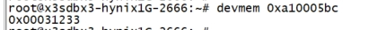
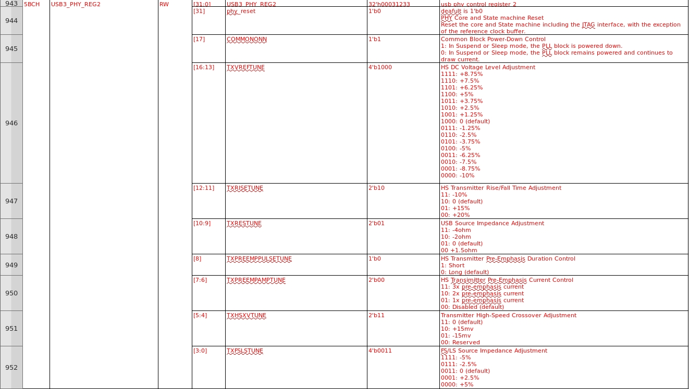
usb2.0 phy相关可调参数如上图所示:
TXREFTUNE: usb2.0直流电平等级调整
TXRISETUNE: 上升沿下降沿时间调整
TXRESTUNE: USB source阻抗调整
TXPREEMPPULSETUNE: 预加重时长控制
TXPREEMPAMPTUNE: 预加重电流控制
TXHSXVTUNE: D+和D-交叉时, 可调节的电压
某客户x3m usb2.0 host眼图
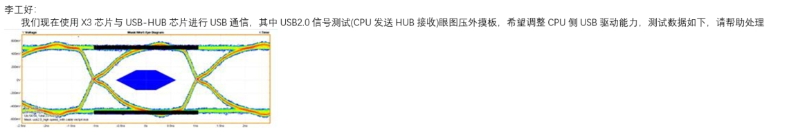
从眼图压外模的情况, 建议可以调节以下参数看看眼图情况。
TXREFTUNE(usb2.0直流电平等级调整)
TXRISETUNE(上升沿下降沿时间调整)
TXPREEMPPULSETUNE(预加重时长控制)
TXPREEMPAMPTUNE(预加重电流控制)
参数调节方式
直接使用devmem命令进行参数修改
如， 修改TXREFTUNE usb2.0 DC直流电平为-10%
root@x3sdbx3-hynix1G-2666:~# devmem 0xa10005bc 0x00031233 root@x3sdbx3-hynix1G-2666:~# root@x3sdbx3-hynix1G-2666:~# devmem 0xa10005bc 32 0x21233 root@x3sdbx3-hynix1G-2666:~# devmem 0xa10005bc 0x00021233使用地平线hbx3dbg.arm工具进行寄存器操作
如，修改TXREFTUNE usb2.0 DC直流电平为-10%
# 1. 读取TXREFTUNE值 ./hbx3dbg.arm -r sys_ctl+0x05bc [16:13] R: (0xa1000000)+0x5bc [16:13] = 0x8 # 默认值0x1000 ./hbx3dbg.arm -w sys_ctl+0x05bc [16:13] 0x0 W: (0xa1000000)+0x5bc = 0x00021233 ,Modify [16:13] as 0x0 # 将TXREFTUNE改为0x0 ./hbx3dbg.arm -r sys_ctl+0x05bc [16:13] R: (0xa1000000)+0x5bc [16:13] = 0x0 # 确定TXREFTUNE修改为0x0, -10%电平
更多手册描述信息摘取
TXREFTUNE
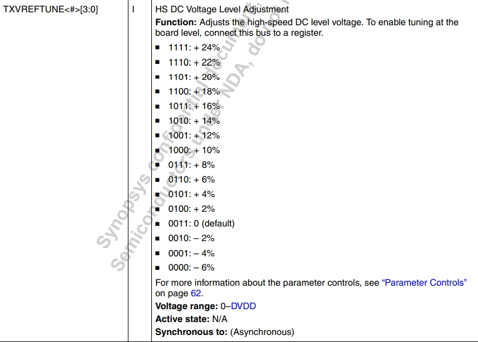
TXRISETUNE
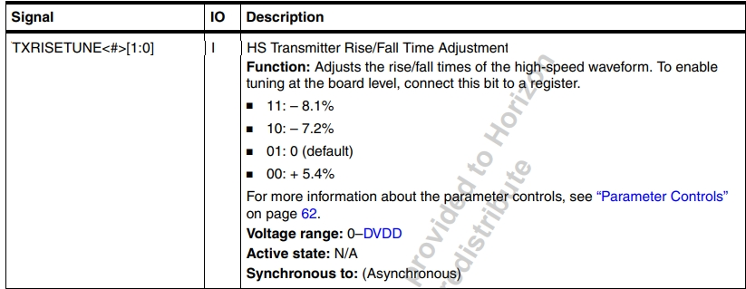
TXRESTUNE
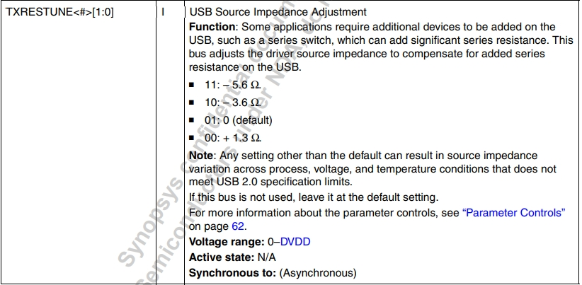
TXPREEMPPULSETUNE
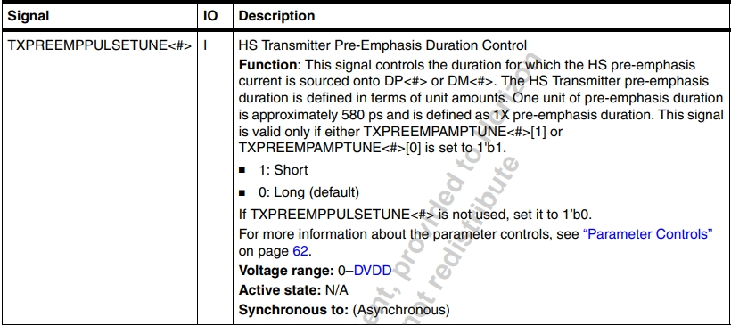
TXPREEMPAMPTUNE

TXHSXVTUNE
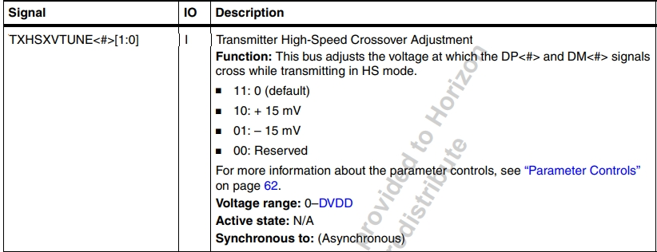
USB3.0 Phy常见参数调试
Synopsys usb3.0 phy有些参数可以tunning。 比如幅度, 去加重, 展频等。
以下记录一下.
1. 展频
解释: (截取维基百科的)
扩频（Spread Spectrum，SS）是将传输信号的频谱（spectrum）打散到较其原始带宽更宽的一种通信技术，常用于无线通信领域。
作用有很多, 和我们相关的主要是
降低电磁干扰（Electromagnetic Interference，EMI）
若对电子设备的时脉产生器（Clock generator）做扩频，也就是刻意在时脉信号（Clock signal）中添加抖动（jitter），则可以将特定造成电磁干扰的能量由特定频率打散，进而减轻其干扰程度，本质上和通信技术的扩频是相同的。
在个人计算机的BIOS设置中常常可以看到“Spread Spectrum”的选项。此处这个选项的主要目的是用于降低电磁干扰，依据不同的系统配置可能能够有效降低电磁辐射的量。但是副作用是降低了信号的清晰度，对超频之后的系统稳定性影响较大。
简单来说, 展频也就是将固定的频率打散在一定范围内。 频谱上, 把能量”平均”了。 这样, 对于EMC(电磁兼容性)上更良好。
x3m usb展频设置
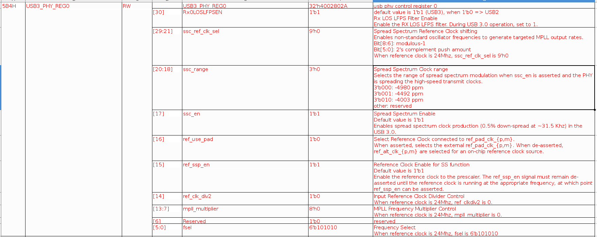
寄存器: 0xa10005b4
可以尝试的调试:
关闭展频功能
./hbx3dbg.arm -r sys_ctl+0x5b4 R: (0xa1000000)+0x5b4 = 0x4002802a ./hbx3dbg.arm -r sys_ctl+0x5b4 [17:17] R: (0xa1000000)+0x5b4 [17:17] = 0x1 # 代表ssc展频功能是开的 ./hbx3dbg.arm -w sys_ctl+0x5b4 [17:17] 0x0 W: (0xa1000000)+0x5b4 = 0x4000802a ,Modify [17:17] as 0x0 # 关闭展频功能
ssc_range调整
可以设置为0, 1, 2三个值, 默认是0.
./hbx3dbg.arm -r sys_ctl+0x5b4 [20:18] R: (0xa1000000)+0x5b4 [20:18] = 0x0 # ssc_range, 默认是0 ./hbx3dbg.arm -w sys_ctl+0x5b4 [20:18] 0x1 W: (0xa1000000)+0x5b4 = 0x4004802a ,Modify [20:18] as 0x1 # 设置成1 ./hbx3dbg.arm -w sys_ctl+0x5b4 [20:18] 0x2 W: (0xa1000000)+0x5b4 = 0x4008802a ,Modify [20:18] as 0x2 # 设置成2
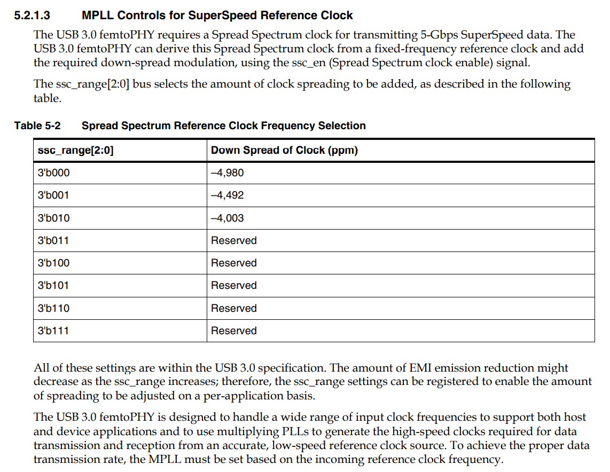
2. 去加重
解释:
Q. 什么是去加重/预加重??
A. 可参考知乎https://zhuanlan.zhihu.com/p/30010064
预加重保持信号的低频部分不变，提升信号的高频部分；而去加重衰减信号的低频部分，保持高频部分。预加重/去加重的目的都是提升信号中高频部分的能量，以补偿信道对高频部分衰减过大。
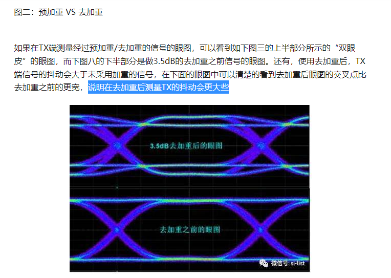
x3m usb去加重调参
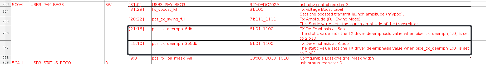
寄存器0xa10005c0
默认采用的是3.5db的去加重, 取值范围是0 ~ 63. 目前默认值是28.
可以按需进行调整.
# 2. 加强3.5db 去加重值
./hbx3dbg.arm -r sys_ctl+0x5c0 [15:10]
R: (0xa1000000)+0x5c0 [15:10] = 0x1c # 3.5db去加重, 默认值28
./hbx3dbg.arm -w sys_ctl+0x5c0 [15:10] 63
W: (0xa1000000)+0x5c0 = 0x9fdcfc2a ,Modify [15:10] as 0x3f # 将3.5db去加重改到最大值63
./hbx3dbg.arm -w sys_ctl+0x5c0 [15:10] 0
W: (0xa1000000)+0x5c0 = 0x9fdc002a ,Modify [15:10] as 0x0 # 将3.5db去加重改到最小值0
如果要使用6db去加重, 可尝试先更改usb控制器的寄存器 GUSB3PIPECTL [2:1] (待确认运行时改是否有效…否则得改代码开机初始化配置好)
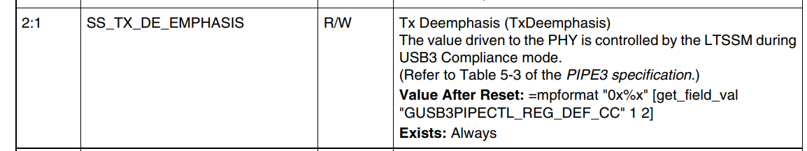
寄存器, 0xb200c2c0
./hbx3dbg.arm -r usb+0xc2c0 [2:1]
R: (0xb2000000)+0xc2c0 [2:1] = 0x1 # 默认用的是01, 即3.5db的去加重
./hbx3dbg.arm -w usb+0xc2c0 [2:1] 2 # 使用6db的去加重
W: (0xb2000000)+0xc2c0 = 0x010e0004 ,Modify [2:1] as 0x2
# 然后更改0xa10005c0 [21:16]位
./hbx3dbg.arm -r sys_ctl+0x5c0 [21:16]
R: (0xa1000000)+0x5c0 [21:16] = 0x1c # 默认是28
./hbx3dbg.arm -w sys_ctl+0x5c0 [21:16] 63
W: (0xa1000000)+0x5c0 = 0x9fff702a ,Modify [21:16] as 0x3f # 设置成63, 增大去加重
3. 幅度
x3m usb tx幅度调整
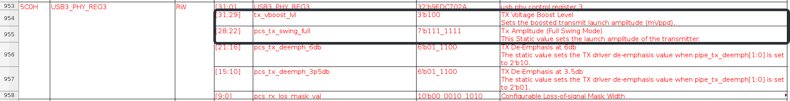
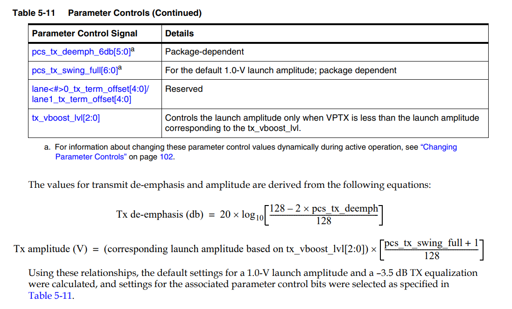
和幅度相关的两个寄存器是 tx_vboost_lvl和pcs_tx_swing_full。
具体计算公式见上图。
tx_vboost_lvl 取值范围 0 ~ 7, 默认值4
pcs_tx_swing_full取值范围0 ~ 127, 默认值127
寄存器是0xa10005c0
具体效果可以调下这两个值看看… 比如:
# 最小值
./hbx3dbg.arm -w sys_ctl+0x5c0 [31:29] 0x0 # tx_vboost_lvl = 0
./hbx3dbg.arm -w sys_ctl+0x5c0 [28:22] 0x0 # pcs_tx_swing_full = 0
...
./hbx3dbg.arm -w sys_ctl+0x5c0 [28:22] 127 # pcs_tx_swing_full = 127
# 偏大值
./hbx3dbg.arm -w sys_ctl+0x5c0 [31:29] 0x4 # tx_vboost_lvl = 4
./hbx3dbg.arm -w sys_ctl+0x5c0 [28:22] 0x0 # pcs_tx_swing_full = 0
...
./hbx3dbg.arm -w sys_ctl+0x5c0 [28:22] 127 # pcs_tx_swing_full = 127
# 最大值
./hbx3dbg.arm -w sys_ctl+0x5c0 [31:29] 0x7 # tx_vboost_lvl = 7
./hbx3dbg.arm -w sys_ctl+0x5c0 [28:22] 0x0 # pcs_tx_swing_full = 0
...
./hbx3dbg.arm -w sys_ctl+0x5c0 [28:22] 127 # pcs_tx_swing_full = 127
参考文档
x2a_sysctrl_sw_reg.xls
dwc_ap_usb3.0_femtophy_tsmc16ffc_08V18V_databook.pdf